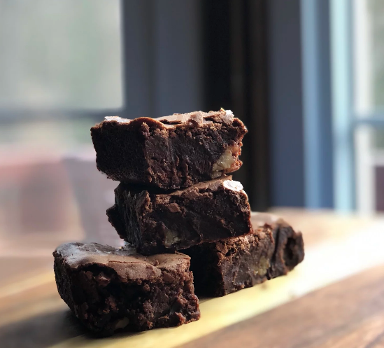

Brownies

Delicious fudgey brownie
Move over boxed brownies! Fudgy brownies with a shiny, crackly crust and surprise ingredient - mashed banana -
which adds just a hint of delicious flavor. These brownies won third place at the Minnesota 2009 state fair and
they are easy to make!
Ingredients
- ¾ cup sifted all-purpose flour
- 1 tablespoon unsweetened cocoa powder
- ¼ teaspoon salt
- tablespoons salted butter
- 5 ounces semisweet chocolate
- 1 ounce bittersweet chocolate
- 1 cup packed light brown sugar
- 2 eggs, lightly beaten
- ½ large banana, mashed
- ½ cup chopped toasted walnuts
- ½ cup semisweet chocolate chips
Directions
- Preheat the oven to 325 degrees F (165 degrees C). Spray the bottom of an 8x8-inch metal baking pan with
cooking spray.
- Mix flour, cocoa, and 1/4 teaspoon plus a pinch of salt together in a bowl and set aside.
- Melt butter in a medium saucepan over low heat. Add semisweet and bittersweet chocolate to melted butter and
stir until smooth. Remove from heat; set aside for 2 to 3 minutes.
- Meanwhile, mix brown sugar, eggs, and banana by hand until combined, about 1 minute. Add melted chocolate
mixture to banana mixture and stir well, about 1 minute more. Mix flour mixture slowly into chocolate,
stirring just enough to combine. Fold in walnuts and chocolate chips. Spread batter into the prepared pan.
- Bake in the preheated oven until a toothpick inserted into the center comes out with moist crumbs, 35 to 40
minutes. Remove from the oven and let cool in the pan on a wire rack for at least 2 hours before cutting.